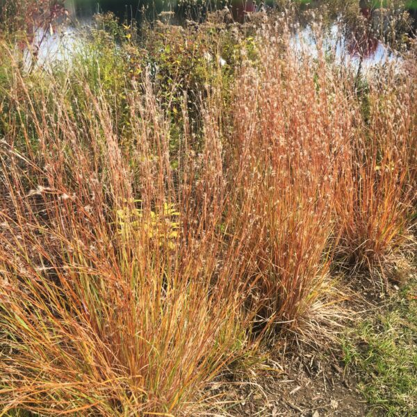

Scholarships, Jobs, and Skillsets. Oh My!
This is a placeholder picture for later on!
Scholarships
- KS Adoptive and Foster Child Assistance Fund Since Ryan aged out of the foster care system as a young adult, he has made substantial progress toward fulfilling his career aspirations as a researcher, thanks in part to this fund.
- Hispanic Development Fund Scholarship Being of Germanic, Irish, and Mexican background, he was awarded a Named Scholarship by Dr. Jimenenez and her family.
- NSF S-STEM Scholarhip Having been interested and highly interested in presenting at a STEM Poster Symposium, he was awarded an S-STEM Scholarship to continue his research and education at the graduate level.
Skillsets
Skillsets
- Time-management Having nearly failed out during his first two years due to his ADHD, he finally got a grip on his time-management skills, and now he excels at estimating and forecasting how long things will take him to do.
- Organization Again, after leaving the K-12 system to obtain a GED, since he was always a disorganized mess, he needed to develop strong organization skills, and this has been done with the help of process tutors
- Curiosity He has been curious since he was a child! However, now that he is in college there is an endless supply of interesting topics to research, which is sometimes so overwhelming for him!
- Hard-working As part of his cultural background and his frequent moves, he realized that he would have to develop a strong work-ethic to overcome his hardship and difficult socioeconomic circumstances.
- Resilience Having been a three-year community college student with only one year under his belt, he recognizes the importance of persistence to achieving your aspirations; regardless of what comes your way, whether is be a fire, a social disaster, difficulties navigating college, you should not let anything stop you!
Jobs
- Red-Robin Gourmet Burgers Despite not relating to his aspiring research career, Ryan wants to emphasize his work experience because these jobs taught him his work ethic, and he never wants to go back!
- Yaya's European Bistros At, Yaya's and Red Robin he served waiters and guests as a food runner, host, and server assistant; and on the back end, he did some dishwashing and bussing along with catering: he is multimodal!
- CVS Pharmacy At CVS Pharmacy, he honed his underdeveloped accounting skills by working the front counter and register, and he also had learned the skill of stocking as well.
- Savers At Savers, he worked the registers again and then also was responsible for hanging clothing and organizing the department store's shelves
- Amazon At Amazon, he almost broke his entire skeleton with the amount of heavy-lifting and intensive hustling that he was required to do: and he worked from 1:00 am to 10:00 am at a warehouse in JOCO!